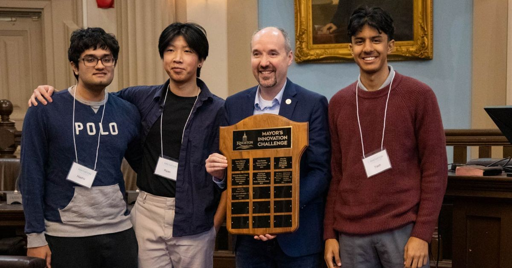
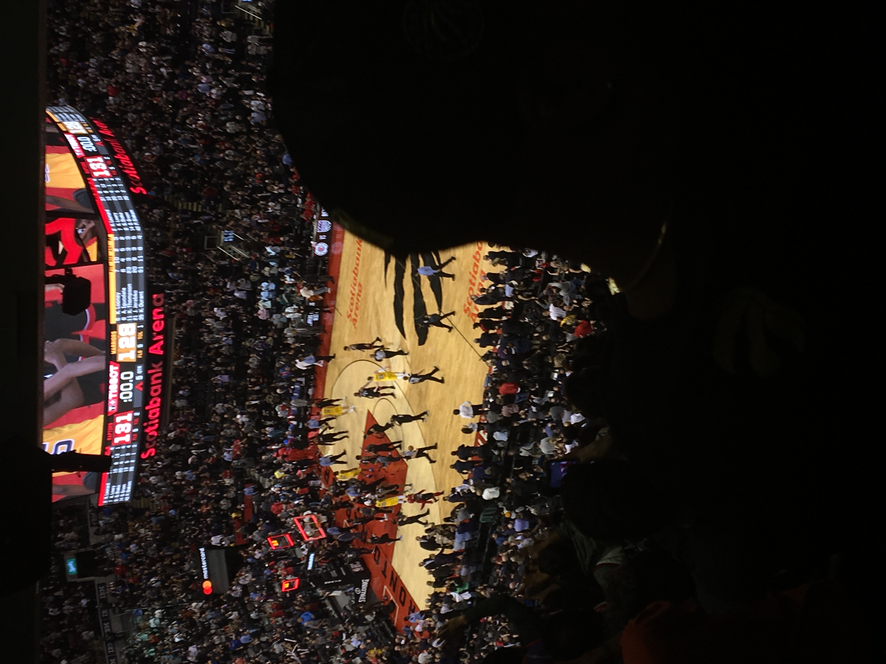

Achievements

Mayor's Innovation Challenge Finals, Kingston City Hall - After fastracking to this pitch competition from QHacks, my group and I was tasked of creating a pitch for our project: Food4All. By making some modiifcations of our idea based off criticism at QHacks, we presented our project in front of the City of Kingston government (See here). Later on in the day, we were awarded with the Public Sector Innovation Stream Award. This award gave me a four month summer internship with the City.

QHacks, Queen's University - At QHacks, I created a web application called Food4All. The purpose of this application was to reduce food insecurity in the City of Kingston through redistribution of what would otherwise be wasted food. Backed by a volunteer network, our pitch aimed at impressing the City of Kingston representative. Fortunately, we were successful in this and awarded Direct Entry to the Mayor's Innovation Challenge Pitch Competition. We had two months to prepare for the next phase of our project.

NewHacks, University of Toronto - Entering my first Hackathon, this was a two day competition held at the University of Toronto. Excited but nervous, my friends and I created a project solely focused on our interest: basketball. We created the Player Value Rating algorithm, a tool that lets anyone objectively determine the best basketball player based on their peers AND respective to their teams. This does not currently exist in basketball analytics. Our project was further focused on highlighting Ontario University Men's Basketball players, who are often overlooked compared to their peers in the NCAA. Our project won the #1 Overall Project at this competition.
Articles about My Projects
Queen's Gazette
Kingstonist
The Whig
Back to Top
Project Log
Click on a project file to learn more.
- all_projects/
- competition_projects/
- personal_projects/
- work_and_school_projects/
Back to Top
About Me
Born in Los Angeles, California, raised in Toronto, but studying at Queen's University in Kingston, I can safely say that I'm no stranger to change. Whether personal, academic, or athletic, adversity has followed me throughout my life, I've always moved forward. Scoring an own goal in my middle school City Championship game used to be one of my most embarrassing memories. Today, I can laugh at myself for it; something I couldn't do before this.

On the topic of sports, I continue to play soccer, basketball, and badminton at a recreational and competitive level through University Intramurals. I even won my first badminton intramural with a good friend of mine! I also love watching basketball, especially the Golden State Warriors. Apart from sports, I engage in other activities like chess, movies, and video games. However, I mostly love to code.
I started learning to code in Grade 4, trying to recreate bootleg versions of Club Penguin. I became very familiar with Flash. I then stumbled across the world of web development and tried to make my own websites, using WordPress and Blog sites, and then eventually from scratch. But, I gave up for a while.
I revisited programming in middle school and picked it up more seriously in high school. Currently, I consider myself a full stack developer, with lots of experience in different parts of the programming world. Right now, I work with an Angular Firebase tech stack for the City of Kingston. In the past, I've worked with Flutter, Python/Flask, C, C#, Java, and pure HTML/CSS/JavaScript. Also, I love AI. I work for Cohere and help improve their large language models on a part time basis. I'm always looking for ways to improve my knowledge and branch out!
Back to Top